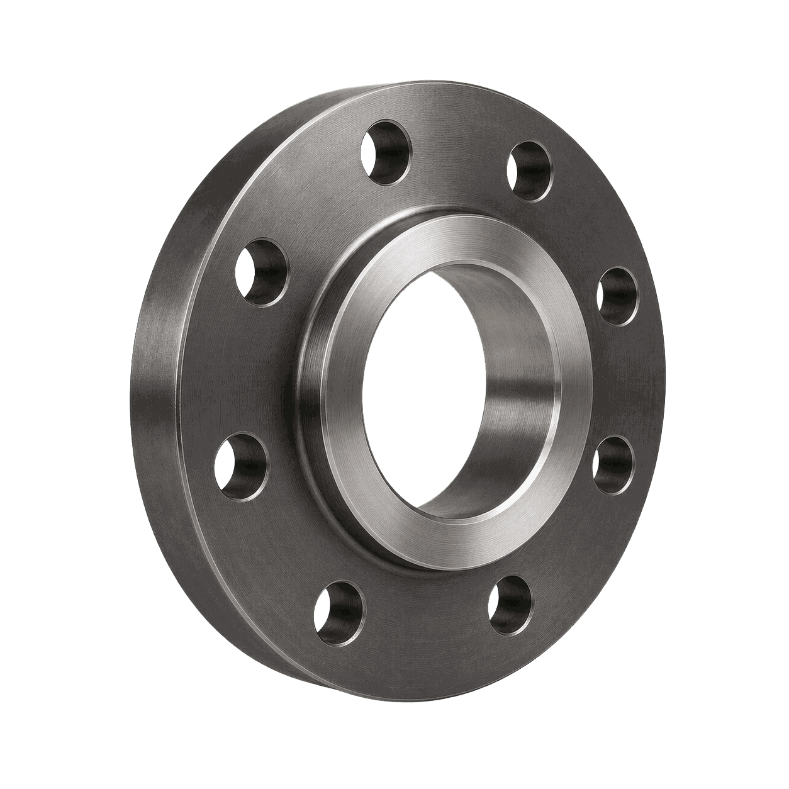
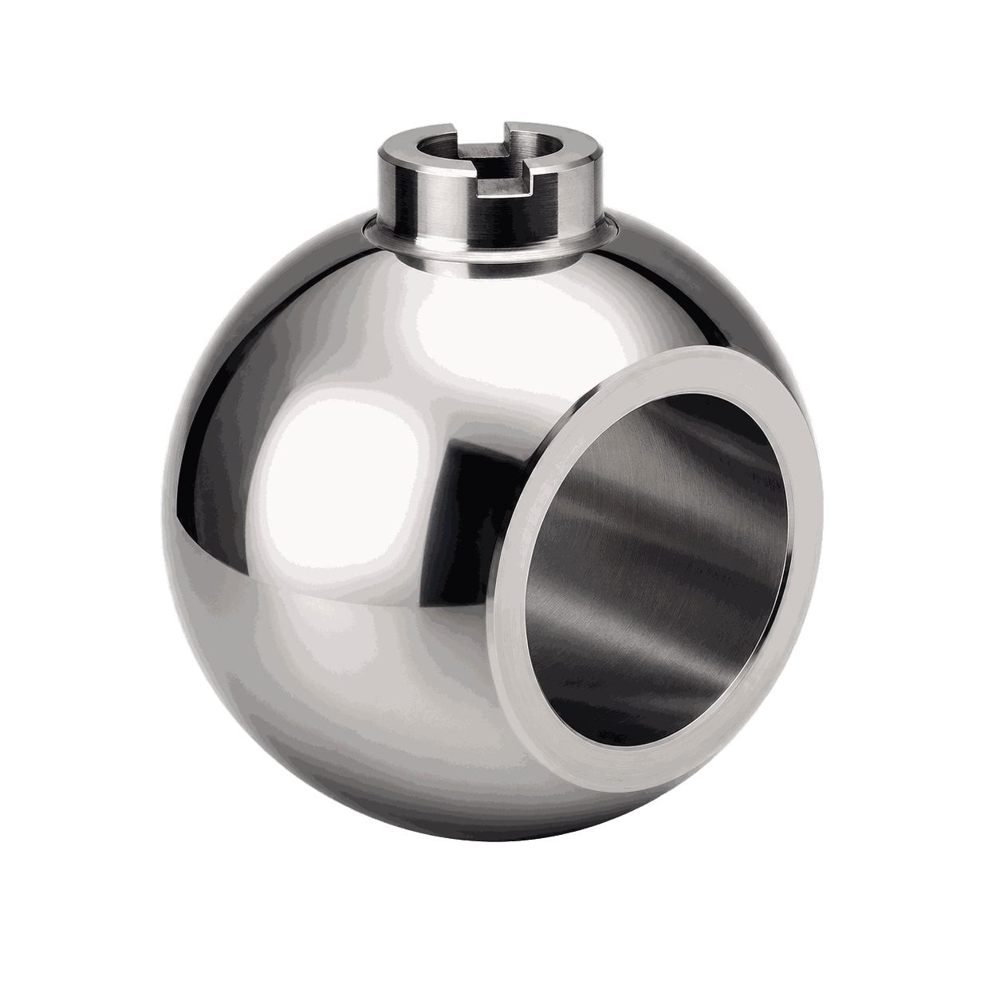
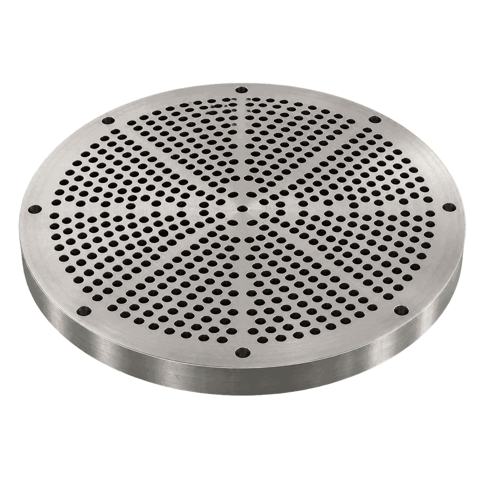
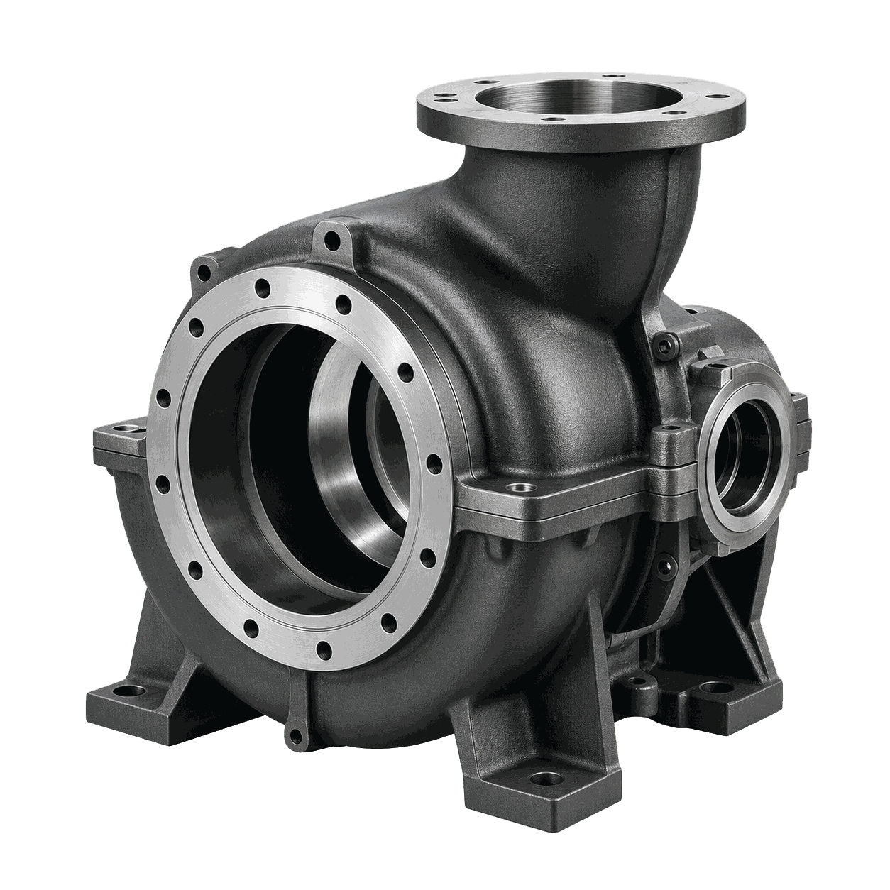
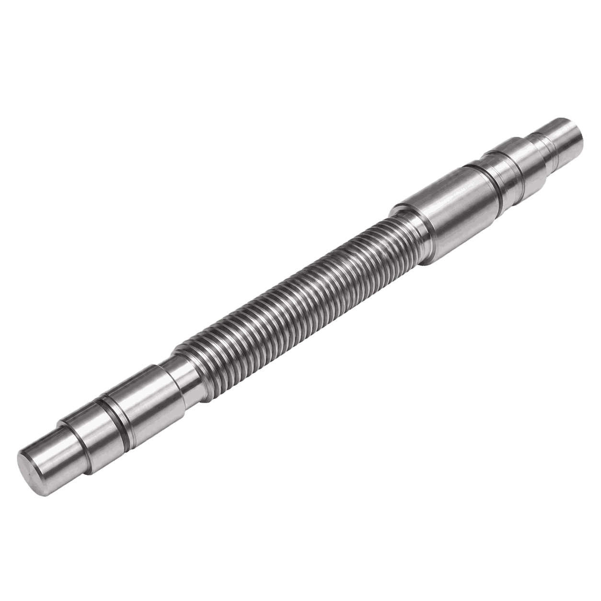
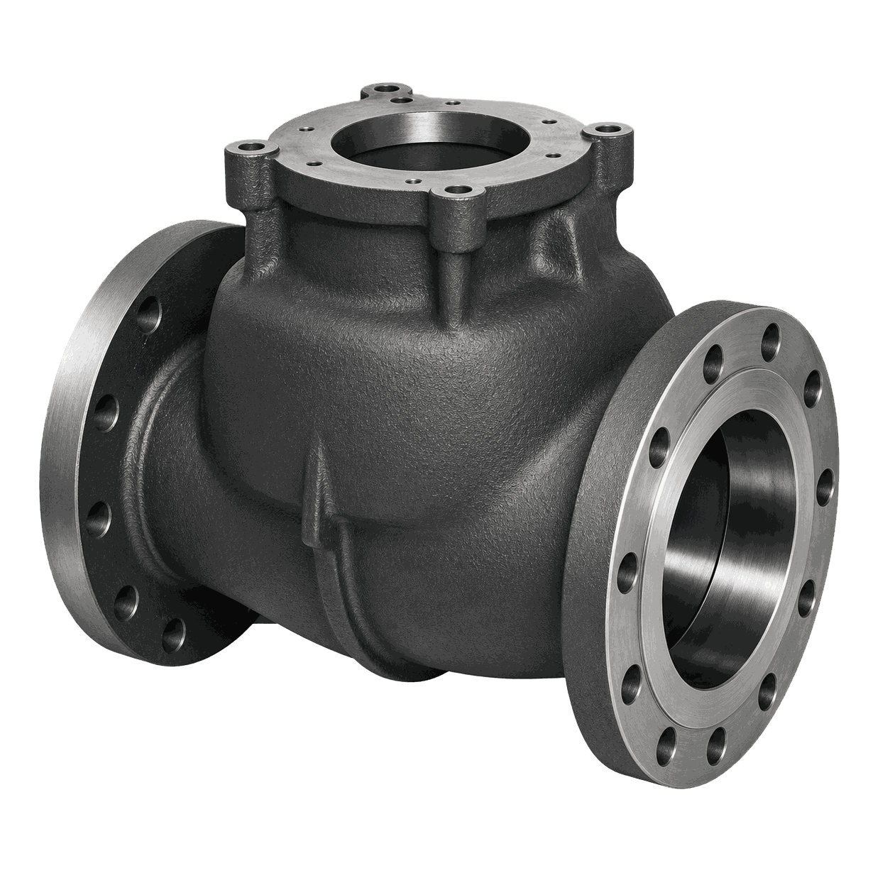
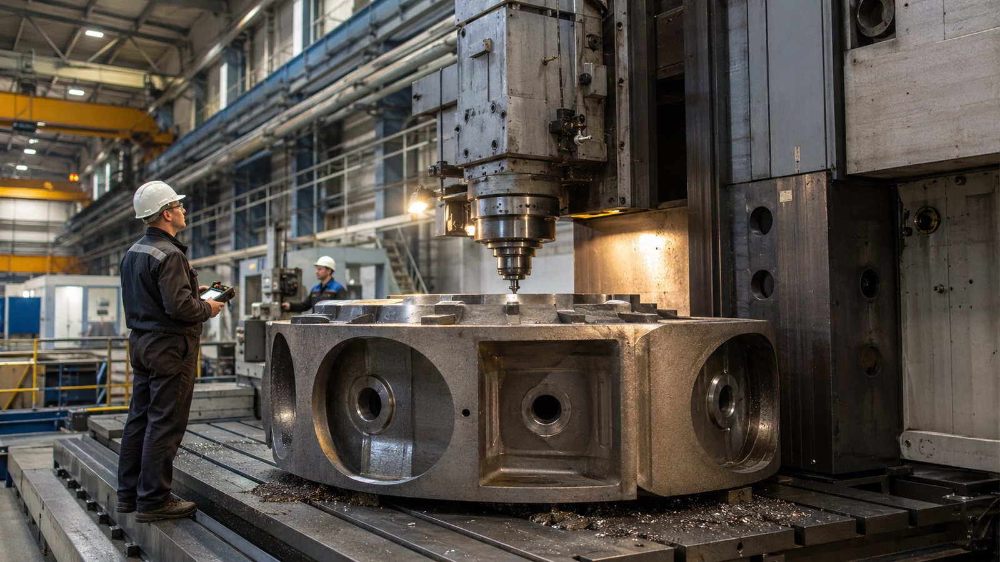
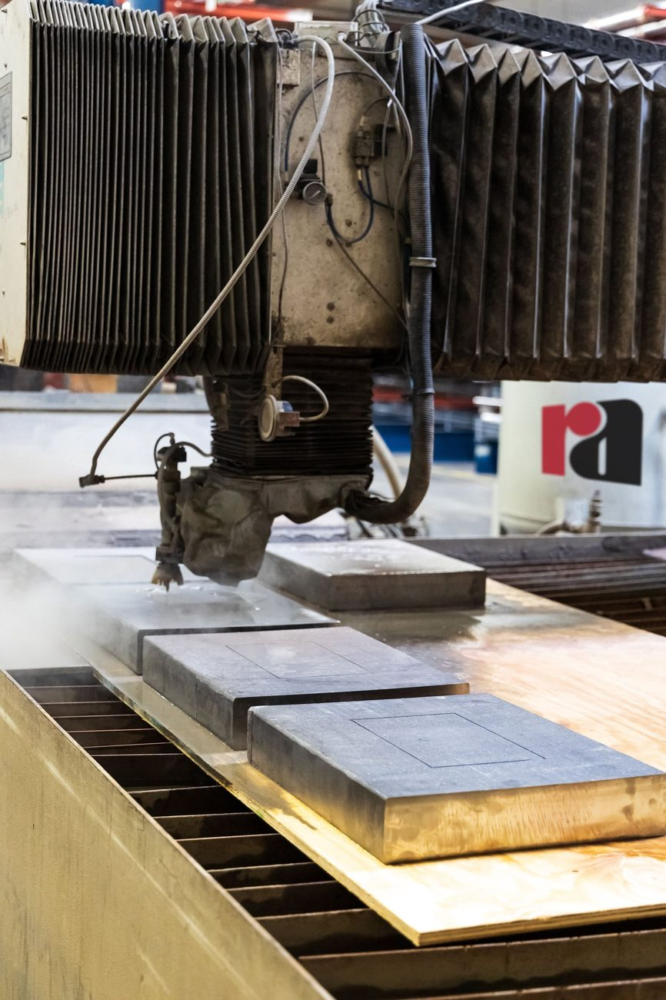

Трубный фланец
Технологическая задача
Построить маршрут обработки детали «Трубный фланец» с понятным разделением операций и подбором оборудования под каждую операцию.
Топливно-энергетический сектор: детали, технологии, оборудование
Технологические маршруты для фланцев, арматуры, насосных узлов и деталей трубопроводной обвязки с упором на герметичность и ресурс.

Построить маршрут обработки детали «Трубный фланец» с понятным разделением операций и подбором оборудования под каждую операцию.

Построить маршрут обработки детали «Шаровая пробка» с понятным разделением операций и подбором оборудования под каждую операцию.

Построить маршрут обработки детали «Трубная решётка» с понятным разделением операций и подбором оборудования под каждую операцию.

Обеспечить точность базовых плоскостей, посадочных отверстий и сопрягаемых поверхностей детали «Корпус насоса».

Обеспечить соосность шеек, стабильную геометрию детали «Вал арматуры» и чистоту рабочих поверхностей.

Обеспечить точность базовых плоскостей, посадочных отверстий и сопрягаемых поверхностей детали «Корпус задвижки».
Реальные запуски оборудования на производствах: что поставили, как вводили в эксплуатацию, что получил заказчик.

Внедрения · 24.06.2026Фрезерный станок для производства деталей турбогенераторов и гидрогенераторовЧитать →
Внедрения · 17.06.2026Ввод установки гидроабразивной резки в производство: что важно на стартеЧитать → Внедрения · 12.05.2026Запуск круглошлифовального станка: от базовой настройки до контроляЧитать →
Внедрения · 12.05.2026Запуск круглошлифовального станка: от базовой настройки до контроляЧитать →Как проходит проект от чертежа до серии — шесть шагов. Нужен участок целиком — комплексное оснащение.